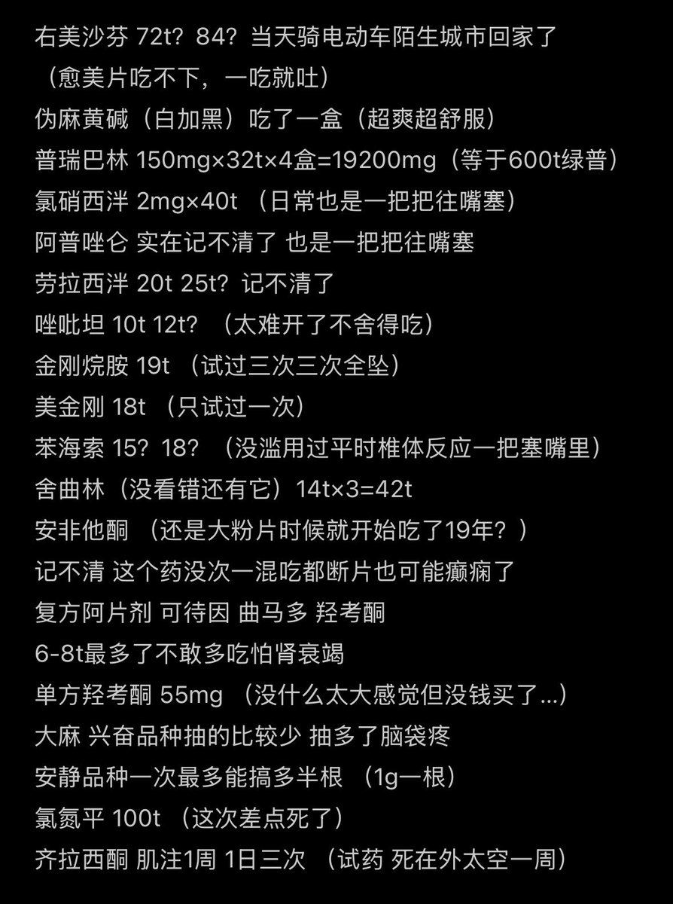

小小小小风
@XF_shiho_mafuyu
@Jy666992 我草剂量好大啊

烨篮子
@Jy666992
睡不着统计了一下我平时吃药的耐受
（很多药都是混吃的剂量）
平时每天规律服用一定包含抗抑郁剂 苯二氮卓类 Z系列 情绪稳定剂/抗精分剂
该说不说有时候看挺可怕的 这还是我暂时想起来的 还有很多小型滥用
对了还有酒精 我胃还好的时候2斤53加啤酒 胃不好有段时间每天最少两瓶干红
表里不是od药品！ https://t.co/6OyFF0SGXz